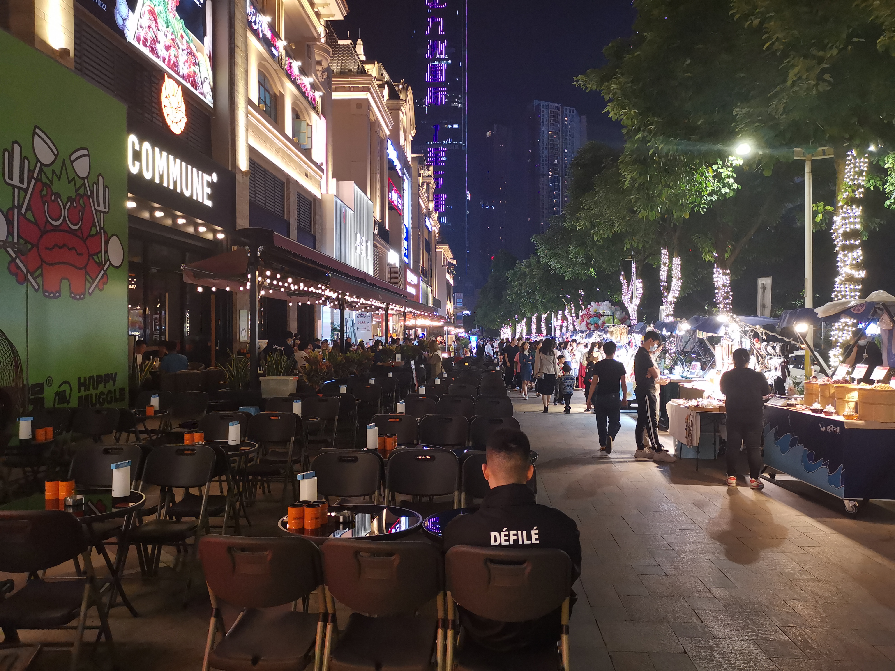

南宁之行
2022-10-26
# 旅行
这是我的第三次去南宁，这次去的心情比较放松，也得以有充足的时间来比较深度地体验了南宁的美。南宁是个适合休闲和养老的地方。整个城市往外溢出一直整洁和舒适的气息。还有让我心心念念的狗肉和田鸡。如果我现在不需要上班不顾及家里老小。我想我一定会想呆在南宁。这次我真正做到了 enjoy myself.
邕江畔走向水街的路上
疫情下的南宁步行街，不知道多年后会不会感觉很好笑。
南宁的市井小街感觉都非常干净，比广东整洁地多。不知道是不是和少数民族地区有关。
南宁的夜隐隐有种“Miami”的感觉
名歌湖周边郁郁苍苍的树，让人真正明白“绿城”的意义
南宁的整洁和大气 让人印象深刻


脆皮狗肉和田鸡 配上啤酒 一口下去香气直逼脑门。

这次终于体验了把广西特产“酸野”
广西民族博物馆的外形是个铜鼓，但里面陈设的内容全是些废话连篇和故意误导，真要了解壮侗民族的历史，还是需要自己去维基百科。真是“百代皆行秦政治” ，大一统的王朝容不下“瓯骆”越的民族自觉。


广西人对狗肉的热爱 可以从各处看出，20元的狗肉粉给了我满满的幸福感。
南宁因为多丘陵，市内多是共享电动车。但却不提供头盔（真是矛盾至极，不是强制要求戴头盔的吗？），我试了下，骑了100米吓得赶紧还了车。